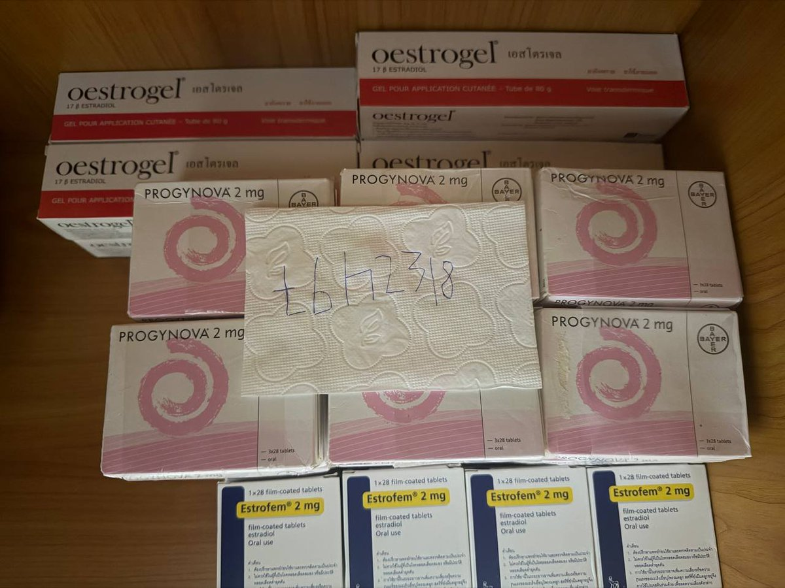
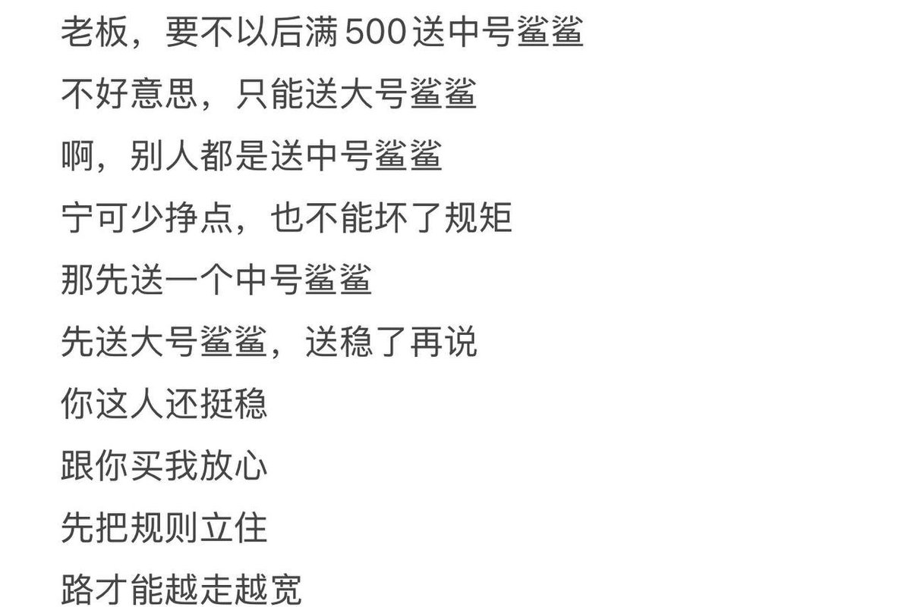
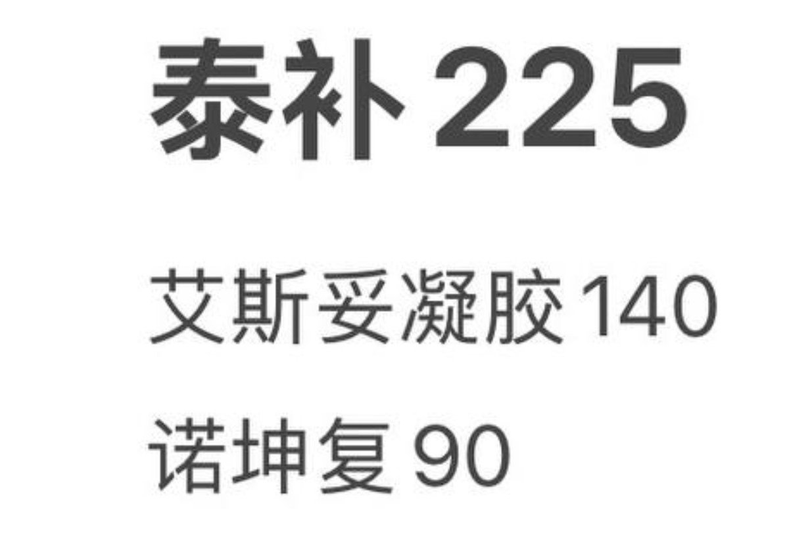
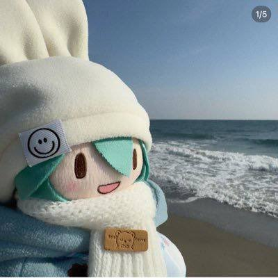

Rain Antares🏳️⚧️🍥
@Rain_Antar1121
RT @tbh2318: 转发评论点赞参加抽奖，抽三个，一等奖诺坤复两盒，二等奖诺坤复一盒，三等奖爱斯妥凝胶一盒，包括上一条也算，现货（泰补，爱斯妥凝胶，诺坤复）老板这爱斯妥凝胶怎么卖？125，满500送鲨鲨吗？送，规矩立住了，路才能越走越宽 …




乇乇 momo 糖商 🏳️⚧️🍥 泰补 诺坤复 艾斯妥凝胶
@tbh2318
转发评论点赞参加抽奖，抽三个，一等奖诺坤复两盒，二等奖诺坤复一盒，三等奖爱斯妥凝胶一盒，包括上一条也算，现货（泰补，爱斯妥凝胶，诺坤复）老板这爱斯妥凝胶怎么卖？125，满500送鲨鲨吗？送，规矩立住了，路才能越走越宽 https://t.co/gXlN9qEn70